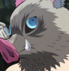

Main Characters in Season 2
Tanjiro Kamado, Water Breathing/Sun Breathing Technique
Tengen Uzui, Sound Breathing Technique
Zenitsu Agatsuma, Thunder Breathing Technique

Inosuke Hashibira, Beast Breathing Technique